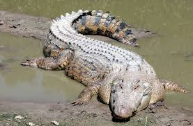
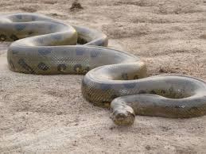
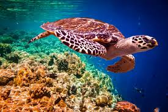
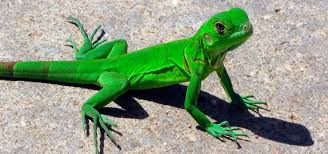
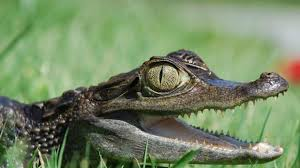

Los denominados cocodrilos son las especies de reptiles que pertenecen a la familia de nombre Crocodylidae. A su vez, estos forman parte del clado de
saurópsidos (Sauropsida) y arcosaurios, un grupo de amniotas diápsidos que evolucionaron de los Archosauriformes.El término es utilizado en sentido
estricto para denominar a las especies que conforman la familia Crocodylidae. Sin embargo, muchas personas también lo utilizan para denominar a todas
aquellas que pertenecen al orden Crocodilia (cocodrilos, caimanes y aligatóridos), los gaviales y cocodrilomorfos.A pesar de ello, esta entrada está
centrada en los primeros, de los cuales en la actualidad se conocen 14 especies diferentes y que sus primeros antepasados se originaron en el Eoceno,
es decir, hace aproximadamente 55 millones de años.
- La piel del cocodrilo varía, ya que la parte lateral y superior está compuesta por placas óseas , pero con mayor resistencia y dureza.
- La cabeza tiene forma triangular y sobre ella están sus dos ojos amarillentos.
- La boca está compuesta por una gran cantidad de dientes sumamente afilados, los cuales no permiten que las presas capturadas puedan liberarse.
- cuenta con lengua a pesar de que su anatomía no les permite sacarla.
- Sus fosas nasales evitan que el agua entre y les llegue a los pulmones.
REGRESAR AL MENÚ
Regresar al menu principal

La anaconda no solo sorprende por su increíble apariencia y gran tamaño, esta especie cumple una función
vital para mantener el equilibrio en los ecosistemas donde habita y es una especie que posee grandes cualidades.
Esta especie es endémica de América del Sur, su hábitat natural son las charcas y los ríos, suele estar en estanques
de agua quieta, también se le puede encontrar en los árboles. Actualmente, existen cuatro especies de anaconda
distribuidas por Brasil, Colombia, Perú, Guyana, Venezuela, Paraguay y la Isla Trinidad.
- las hembras mas grandes que los machos, alcanzando hasta 10 metros de longitud.
- Su coloración por lo general es un verde oscuro, con algunas manchas en forma de óvalo que tienden a ser de color negro y ocre.
- En su vientre tiene con color blancuzco y al final de su cola muestra algunos diseños entre los colores amarillo y negro, estos diseños son únicos para
cada ejemplar de anaconda.
- Tiene una cabeza un poco achatada y muy fuerte con dos ojos de tamaño pequeño con pupila elíptica.
- Su hocico se encuentra recubierto por un número específico de escamas engrosadas, en total son 6, tendrá 3 a cada lado.
REGRESAR AL MENÚ
Regresar al menu principal

La tortuga carey es la más “tropical” de todas las especies de tortugas marinas, al encontrarse típicamente en aguas
tropicales y subtropicales del Atlántico, Pacifico e Índico, donde aparece en zonas de arrecifes de coral, áreas rocosas,
estuarios y lagunas costeras. Se encuentra principalmente en el Mar Caribe, el norte del Golfo de México, las Antillas
Mayores y Menores y a través de América Central hacia el sur hasta Brasil. En el Pacifico Oriental ha sido observada en el Golfo de
California y los estados del noroeste de México y desde las costas centroamericanas hasta Colombia y Ecuador en América del Sur.
- La longitud recta de caparazón de las hembras adultas varía normalmente entre 60 y 90 cm.
- Los machos son solo un poco más pequeños, llegando a medir 85 centímetros.
- Los escudos del caparazón también son muy distintivos, presentando 5 en la parte superior y 8 en las partes laterales (4 a cada lado).
- La cabeza se encuentra cubiertas con escamas y los tonos varían entre negro y amarillo claro; la misma es grande y alargada.
- Las aletas son medianas, están cubiertas por escamas y presentan 2 uñas en cada aleta.
REGRESAR AL MENÚ
Regresar al menu principal

El hábitat y la distribución de los lagartos son extremadamente diversos. El único lugar en el mundo donde existen los lagartos es en la Antártida,
necesitan climas cálidos, siempre que sea posible, ya que son de sangre fría. Sin embargo, en climas fríos son capaces de reducir la velocidad de
sus funciones corporales y sobrevivir. También son capaces de comer alimentos que muchas otras criaturas pasarían por alto. Las especies más pequeñas
de lagartos viven bajo las rocas y en las grietas y, a menudo se encuentran tomando el sol a la luz del día. Puesto que son capaces de moverse rápidamente
para escapar de los depredadores y de los seres humanos que pasan por estas zonas. Muchos lagartos viven en los árboles también. Son capaces de escalar
rápidamente en ellos y se encuentran en las ramas. El hecho de que algunos, como el camaleón, puedan cambiar de colores, les permite tener más camuflaje
por lo que pueden encontrar refugio en los árboles, incluso cuando están al aire libre.
- Normalmente tienen cuatro patas, oído con apertura externa y párpados móviles.
- El rango de longitudes va de unos pocos centímetros de algunos geckos del Caribe hasta los cerca de 3 metros del Dragón de Komodo.
- Se distinguen de las verdaderas serpientes por la presencia de aberturas timpánicas y párpados.
- tienen la piel seca, prefiriendo generalmente evitar el agua (aunque todos los lagartos pueden nadar si es necesario).
- Todos los lagartos pueden cambiar de color en respuesta a su entorno o en momentos de peligro.
REGRESAR AL MENÚ
Regresar al menu principal

Inteligentes, misteriosos y muy pacientes, así son los caimanes; esperando el momento justo para atacar. Son frecuentemente confundidos con los cocodrilos,
sin embargo, cuentan con suficientes diferencias como para ser clasificados en un subgénero de estos últimos. Los caimanes habitan en los países de
Centroamérica, Sudamérica y al sur de Estados Unidos; en total se han conocido 6 tipos, de los cuales 3 variedades ya extintas provenían del Perú y Venezuela.
Las 3 variedades restantes habitan en ríos, lagos y pantanos y tienen más de 83 millones de años en el planeta.
- tienen las patas cortas
- con una cola gruesa que puede llegar a representar el 30% de su volumen corporal y es bastante fuerte.
- Un caimán, lagarto negro o yacaré, puede llegar a medir entre 1 y 2 metros y medio de largo.
- Son carnívoros pero un tanto perezosos, así que no se esfuerzan mucho en buscar presas grandes; se limitan a la caza de peces, animales pequeños
cercanos y otros reptiles de menor tamaño.
- Los caimanes pueden estar en el agua o en la tierra.
REGRESAR AL MENÚ
Regresar al menu principal